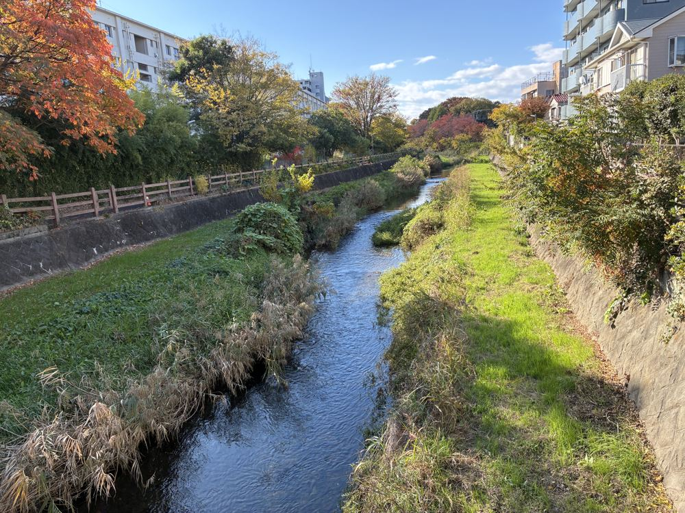

Tokyo's Secret Spa Day: Walking the Kurome River to Spa Japon
Ask a first-time visitor what they want from Japan and, somewhere after sushi and temples, almost everyone says the same thing: a real Japanese bath. Then they look up the etiquette — wash first, no swimsuits, which towel goes where — and quietly cross it off the list. That's a shame, because the bath is the single most restorative thing you can do in this country, and the version of it I like best doesn't happen in a famous onsen town three hours away. It happens thirty minutes from Ikebukuro, at the end of a riverside walk most Tokyo residents haven't done either.
The river is the Kurome, and it doesn't behave like a Tokyo river. The big rivers downtown run grey between concrete walls. The Kurome runs clear — genuinely clear, fed by natural springs that bubble up through the Musashino plateau in Higashikurume. The spring cluster that feeds it is respected enough that it was selected as one of Japan's officially designated famous waters. Egrets stalk the shallows, carp hold in the current, and if you're lucky you'll catch the blue flash of a kingfisher. In summer the path is green tunnel; in spring it's cherry blossom the whole way.

What the afternoon actually looks like
We meet on the Seibu line and walk the river first — an easy, flat stroll with no crowds, no tickets and nothing to queue for. This is deliberate. A Japanese bath is better when you arrive slightly tired, and the river gives us time to talk through the bathhouse rules while they still feel abstract. By the time we reach the doors, nothing inside will surprise you.
The destination is Spa Japon — Spadium Japon, to give it its full name — one of the largest spa complexes in the Tokyo area. It's what happens when Japan takes the neighborhood sento and scales it up: open-air baths, carbonated baths that fizz against your skin, saunas, and a food hall good enough that locals come just to eat. It is emphatically not a tourist facility, which is exactly the point. You'll be bathing with families from the neighborhood, and my job is to make sure you do it like you've done it before.
Why a guide matters for this one
Nobody needs a guide to look at a temple gate. A bathhouse is different: the anxiety isn't about finding it, it's about doing it wrong. I walk you through everything before we split into the baths — lockers, washing stations, which baths to try in which order, how long to actually stay in the hot one — and I'm on hand afterward over a cold drink to compare notes. Guests consistently tell me this was the day Japan stopped feeling like a place they were watching and started feeling like a place they were in.
It's also, at 2.5 hours, the easiest tour I run — no mountain, no long transfers, and it slots neatly into an afternoon. If your itinerary is a wall of shrines and shopping, this is the block of calm that saves the trip.
Soak it in with a local
Ultimate Spa Japon Retreat & Kurome River Stroll — 2.5 hours, ¥9,000, rated 5.0 on GetYourGuide. Towels, guidance and zero awkwardness included.
Check dates & book →Building a slow-Tokyo day?
Guests often pair this with the Totoro-Inspired Forest & Lake Sayama walk for a full green-Tokyo day, or browse other things to do in Tokyo.
Some links on this page are affiliate links — booking through them supports this site at no extra cost to you.